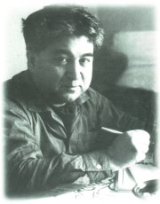

Zengin Ahmet Bey'in verdiği altını cebine indiren Yoksul Mehmet Ağa,
- Başüstüne!... diyerek oradan çıkar. Doğru Zengin Ahmet Bey'in tarif ettiği talih kuyusuna gider. İki eli ağzına boru yapıp kuyudan içeri üç defa bağırır:
- Zengin Ahmet Bey'in talihi!.. Zengin Ahmet Bey'in talihi!.. Zengin...
Karşısında samur kürkler içinde parmakları yakut, zümrüt taşlı altın, platin yüzüklerle dolu, yakışıklı bir adam belirir,
- Buyur! der, Zengin Ahmet Bey'in talihiyim. Beni mi çağırdınız?
- Evet efendim. Beni Zengin Ahmet Bey yolladı. Selamları var. Diyor ki..
Zengin Ahmet Bey her ne dediyse, hepsini tekrarlamış. Daha lafını tamamlamadan Zengin Ahmet Bey'in talihi, elini kaldırıp:
- Olmaaaz! diye bağırmış. Katiyyen olmaz. Sen Zengin Ahmet Bey'e söyle, o hiç tasalanmasın, hiç üzülmesin. Benim ona verdiklerim daha hiçbişey değil. Asıl bundan sonra vereceğim. Elindeki her bir, bin olacak. Yan gelsin, çoluğu çocuğu ile, yesin, gezsin tozsun, eğlensin...
Bunları söyledikten sonra, Zengin Ahmet Bey'in talihi gözden kaybolmuş.
Yoksul Mehmet Ağa şaşırmış. Kendikendine,
- Bu ne iştir, diye söylenmiş... Bu nasıl iştir böyle? Benim gibi fakir fıkara üç kuruşu birarada görmek için gece gündüz çalışır da yine iki yakası biraraya gelmez. Öte yandan dünya kadar zengin biri, "Artık yeter, istemiyorum!" der, talihi, "Olmaaaz, ille de vereceğim!" diye tutturur.
Böyle düşüne düşüne Yoksul Mehmet Ağa,
- Hazır burasını öğrenmiş, talih kuyusunun başına gelmişken bir de kendi talihimi çağırayım! Talihime yalvarıp yakarayım, belki yüzüme güler... diye düşünmüş. Bu sefer kuyunun ağzından,
- Yoksul Mehmet Ağa'nın talihi!.. diye üç defa bağırarak kendi talihini çağırır.
Kuyunun dibinden "Dım dım da dım, dım dım da dım dım... Vermem de vermem... Vermem de vermem!" diye bir ses duyulur. Derken Yoksul Mehmet Ağa'nın karşısına elinde bir tambura ile bir adam çıkar. Adam ama ne adam... İki karış boyu var, sırtında kocaman bir kambur. Bir ayağı da topal, bir gözü kör, bir kolu çolak, biçimsiz, suratsız, ters pis bir herif... Elinde tuttuğu tamburayı hem çalar, hem de Yoksul Mehmet Ağa'nın etrafında seke seke fırfır dönmeye başlar:
- Dım dım da dım... Vermem de vermem... Dım dım da dım dım... Ne o, beni mi istedin?
- Ben Yoksul Mehmet Ağa'yım. Sen kimsin?
- Ben de senin kör talihinim. Çağırdın geldik işte... Dım dım da dım... Vermem de vermem...
Yoksul Mehmet Ağa, talihine yalvarmaya başlar:
- Ey benim kör talihim! Ey benim topal talihim! Bak halimi görüyorsun. Yaşım yetmiş, işim bitmiş. Ak sakaldan yok sakala gidiyorum. Bütün ömrümce, gece demedim, gündüz demedim, hiç durmadan çalıştım. Ama neye yarar? Bigün bile gülmedim. İki yakam biraraya gelmedi. Ey benim kamburunu sevdiğim hem kör, hem kel, hem topal talihim! Yalvarırım sana... Şurada üç günlük ömrüm kaldı. Ne olur gül bana artık. Gül de dünyadaki şu üç günlük konukluğumu olsun rahat geçireyim.
Yoksul Mehmet Ağa'nın talihi,
- Ulan alçak, der, eline bir altın geçti diye şımardın, yüz buldun ha? Öyle mi? Dım dım da dım dım... Dım dım da dım dım... Vermem de vermem... Ben sana o altını da vermezdim ama, sen dua etki, o sırada tamburamın telini tamir ediyordum. Yoksa o bir altını sen ömründe zor görürdün... Anladın mı mendebur?
Yoksul Mehmet Ağa'nın talihi, etrafında tambura çalıp,
- Vermem de vermem!... diye şarkı söyleye söyleye kaybolur.
Yoksul Mehmet Aga, biraz daha yalvarıp, kör talihinin taş kalbini belki yumuşatırım diye, onun arkasından kuyuya eğilir... Cuuup! Kuşağının arasındaki altın da kuyuya düşer. Kuyunun dibinden bir kahkaha sesi akseder:
- Dım dım da dım dım... Vermem de vermem.
PIRTLI MASAL
Bir varmış bir yokmuş. Memleketin birinde çok zengin olduğu kadar da cimri bir kan koca varmış. Saray kadar geniş bir evde, kendileri gibi cimri bir uşaklarından başka kimseleri yokmuş.
Uşak, su katılmamış halis bir uşak olduğu için, efendisi ve hamım ne buyurursa, onun doğru mu, yanlış mı olduğunu düşünmeden yaparmış.
Günlerden bigün efendisi uşağına,
- Git pazardan bir tas bal al!.. demiş.
Yüzde yüz halis, hilesiz uşak yerlere kadar eğilmiş:
- Başüstüne efendim.
Hemen pazara koşmuş. Zengin efendisini kazandırmak için, yoksul balcılara kazık atmanın yollarını aramış. Çekişe çekişe pazarlık etmiş. Sonunda o gün hiç satış yapamamış ihtiyar bir balcıdan, görülmemiş ucuzlukta bal alıp kocaman tası doldurmuş. İhtiyar balcı, o gün eline bikaç kuruş geçirebilmek için, uşağa balı, sermayesinden daha ucuza vermek zorunda kalmış.
Uşak, su katılmamış, halis bir uşak olduğundan zengin efendisini kazandırıp yoksul balcıyı kazıkladığından sevinç içinde yolda giderken, üstü başı, yırtık zavallı bir kadın,
- Elindeki tastan, ne olur bana bir tadımlık bal versene... çocuğum hasta, hekimler bir kaşık bal yemezse öleceğini söylediler... diye yalvarmaya başlamış,
Hilesiz, hurdasız uşak, zavallı yoksul kadınla,
- Pırt, pırt!... diye alay etmiş, dilini çıkarmış.
Hasta yavrusunun acısıyla yüreği yanan zavallı kadın şöyle demiş:
- Bütün efendiler, kendilerinden daha büyük efendilerinin uşaklarıdır. O tastaki baldan yiyen bütün uşaklar, dilerim, senin gibi pırtlasın...
Uşak, kahkahalarla gülerek yine,
- Pırt, pırt!... diye kadınla alay etmiş.
Eve gelince uşak, efendilerinden önce tadına bakmak için tastan bir parmak bal alıp yemiş. Sonra sofrada bekleyen efendisi ile hanımımn önüne bal tasım koymuş. Hanım sormuş:
- Pahalı almadın ya balı? Katıksız uşak cevap vermiş:
- Hayır pırt... Pahalı pırt, almadım pırt... Çok pırt, ucuza pırt, aldım pırt...
Efendisi pırtlayan uşağına şaşmış,
- Ne oldu sana? demiş, neden böyle pırtlayıp duruyorsun? Uşak da, demiş ki:
- Ben pırt, baldan pırt, aldıktan pırt, sonra pırt, böyle pırt oldum pırt...
Hanım, tastaki baldan bir parmak almış sonra,
- Nesi var pırt, bu balın pırt, pekala bal pırt... demiş. Efendi kızmış,
- Ne oluyor size, pırtlayıp duruyorsunuz?... diye bağırmış. O da baldan bir parmak alınca,
- Balın pırt, nesi var pırt, pekala pırt, bal işte pırt... demiş. Efendi, hanım, uşak her kelimenin sonunda pırtlamadan konuşamaz olmuşlar.
- Haydi pırt, bunu pırt, belediye pırt, reisine pırt, götürelim pırt...
Balı aldıkları gibi belediye reisine gidip, pırtlaya pırtlaya başlarına geleni anlatmışlar. Belediye Reisi,
- Allah Allah!... diye şaşmış, o da baldan bir parmak almış,
- Bu balın pırt, nesi var pırt, pekala pırt, bal işte pırt... demiş.
Sonra hep birden,
- Haydi pırt, bir kere de pırt, kadıya pırt, gidelim pırt... demişler.
Kadıya gidip başlarına geleni anlatmışlar. Kadı, lahavle çekmiş, bir parmak da o ağzına alınca,
- Allah Allah pırt, bu nasıl pırt, iş pırt?... Basbayağı pırt, bal işte pırt... Bu balı pırt, vali pırt, paşaya pırt, götürelim pırt... demiş.
Vali Paşa, karşısında pırtlayıp duran bir sürü insan görünce şaşırmış. O da baldan bir parmak alıp denemiş.
- Pekala pırt, güzel, pırt, bal pırt...
İş gittikçe büyümüş, Şeyhülislam, Kazasker, bütün vezirler hepsi baldan birer parmak ağızlarına alınca pırtlamaya başlamışlar. Sonunda sadrazama gidip başvurmuşlar:
- Şu balın pırt, esrarını pırt, çözünüz pırt... Sadrazam da baldan bir lokma alıp o da pırtlayınca, efendilerin en büyüğü Padişaha gitmiş:
- Aman pırt, padişahımız pırt, efendimiz pırt, şu baldan pırt, lütfen pırt, bir parmak pırt, alınız pırt.
Padişah büyük bir hayret içinde, insanları pırtlatan baldan bir parmak almış ve her kelimesinde o da pırtlamaya başlamış:
- Bu balın pırt, nesi var, pırt, pekala pırt, bal işte pırt... Balın esrarını çözmek için tahkikata girişmişler. Sonunda gide gide işin ucu, hilesiz hurdasız, halis uşağa kadar gitmiş. Su katılmamış uşak, pırtlayarak başından geçenleri anlatınca, araya araya beddua eden yoksul kadını bulmuşlar. Padişahın huzuruna getirmişler. Padişah:
- Ey pırt, hatun pırt, bizi pırt, bu dertten pırt, kurtar pırt, sana pırt, emir pırt ediyorum pırt!... demiş. Kadın da padişaha şöyle demiş:
- Kendini efendi sanan, ezilene efendilik, ezene uşaklık eden, balsızlara bal vermeyip, balı yalnız kendileri yiyen uşakların uşakları pırtlamadan laf edemesinler.
Bakmışlar ki, çocuğunu ölümden kurtarmak için hasta kadına bir parmak bal vermekten başka çare yok. Bunu iyice anlamışlar. Anlamışlar ama, acaba o bir tadımlık balı vermişler mi?
Hayır. Şöyle demişler:
- Bal tutan pırt, parmağını pırt, yalar pırt... Öbürleri pırt, avucunu pırt, yalar pırt... Ağzımızın pırt, tadı pırt, bozulmaktansa pırt, böyle pırt, pırtlayalım pırt, daha iyi pırt...
O gün bugün, insanların bir kısmı pırtlar durur. İnanmazsanız nutukları dinleyin. Her kelime arasındaki öksürük, aksırık, tıksırık, eski zamandaki pırtlamanın bugünkü modern şeklidir. Aslında o nutuklar şöyledir:
- Vatandaşlar pırt, oyunuzu pırt, bize pırt, veriniz.
- Pırrrt!…
SADRAZAM EŞEK
Bir varmış, bir yokmuş. Evvel zaman içinde, kalbur saman içinde, bir zamanlar memleketin birinde bir padişah varmış. Bütün padişahlar gibi memleketin birindeki bu padişahın da, kendi zamanına göre, çalgıcı ve çengilerden çifter çifter, beşer onar odalıkları, cariyeleri, uşakları, dalkavukları ve daha falan filanları varmış.
Memleketin birindeki bu padişah, her zaman ve her yerdeki padişahlar gibi, açılış törenlerinde bulunmak, geçit resimlerinde selam vermek, başkalarının yazdığı nutukları okumak, seyahat etmek gibi çok önemli memleket işlerinden vakit bulabildiği zamanlarda ava çıkarmış.
Av meraklısı padişah, yelden nem kapar cinsten olduğundan, özel ormanında özel olarak yetiştirilmiş, özel hayvanları vurmak için ava çıkmadan önce, müneccimbaşıyı çağırır,
- Bugün hava nasıl olacak?.. diye sorarmış. Müneccimbaşı da her zaman bu soruyu şöyle cevaplandırırmış:
- Haşmetmeab efendimiz, sayenizde memleketimizin havası her zaman günlük güneşliktir. Nasıl irade ve farman buyurulursa, elbette hava da öyle olur efendimiz.
Padişah, her padişah gibi işkilli olduğundan , müneccimbaşısına güvenemez, bir de sadrazama sorarmış:
- Bugün hava nasıl olacak?
Kulağının kılı bile ağarmış koca sadrazam, göbeğine varan ak sakalı, padişahın ayaklarına değene kadar eğilir,
- Saye-i şahanede gerek memleket içinde, gerek memleket dışında , gerek siyasi hava ve gerek bütün havalar maşallah çok iyidirler... dermiş.
Kuşkulu padişah birer kere de öbür vezirlerine havayı sorar, onlar da,
- Ufuk pembe, hava berrak... Allah sizi başımızdan eksik etmesin siz daim ve kaim oldukça başka türlüsünün olmasına imkan mı var efendimiz?... derlermiş.
Padişah da artık bütün bu bilim ve devlet adamlarının sözlerine inanır, kendi irade ve kudretine güvenir, av takımlarını has bendelerinin sırtına yükler, önce polisi, jandarması, arkada muhafızı, yanlarda koruyucuları, fedaileri, öncüleri, artçıları, siviller, resmiler, kedisi de bütün bunların ortasında, ala ala heyle güle eğlene, özel ormanında, özel olarak yetiştirilmiş, özel hayvanlarını avlamaya gidermiş.
Gel zaman, git zaman, yine günlerden bigün padişah, müneccimbaşısına,sadrazamına, vezirlerine, şeyhülislam ve reisülküttab hazretlerine, kızlarağasına, başmabeyinciye, hepsine teker teker ve rütbelerinin sırasına göre o günkü havanın durumunu sorduktan ve hepsinden de, "- Efendimizin sayesinde bugün hava dünden güzel olacak!" cevabını aldıktan sonra yola çıkmış.
Her ne kadar padişahın geçeceği yollarda bir ay önceden arama tarama yapılmış, halktan her kim varsa kovalanmış, kışkışlanmışsa da, her nasılsa bir ağacın dibinde bir köylü eşeğiyle beraber kalmış.
Padişah, hayatında hiç köylü görmediği için, yolu üstünde bu yırtık pırtık çullar içindeki yalınayak yaratığı hiçbir canlıya benzetememiş:
- Sen kimsin? İn misin, cin misin?.. diye sormuş. Köylü de,
- Ne inim, ne cinim. Ben de senin gibi beni ademim... deyince padişah,
- Bu ne küstahlık? diye kükremiş. Benim cinsimden böyle kimseler olamaz. Tiz urun kellesini!
Cellatbaşı, palasını köylünün padişah fermanına karşı kıldan ince boynuna indirirken padişah,
- Duuur! diye bağırmış. Ey konuşması az çok insana benzeyen acayip yaratık? Sana bişey soracağım. Eğer bilirsen canını bağışlarım. Bugün hava nasıl olacak?
Köylü de,
- Az vakit sonra rüzgarlar esecek, fırtına kopacak, yağmur başlayacak, her yeri seller götürecek!... demiş. Bu sözlere büsbütün içerleyen padişah,
- Bre hain! diye bağırmış, sen bilmez misin ki ben irade eyledikte mümkün değil bu hava bozmaz? Padişah avdayken nasıl yağmur yağarmış? Çabuk bağlayın şunu katır kuyruğuna!
Köylünün eşeğini bir katırın kuyruğuna, köylüyü de eşeğin kuyruğuna bağlamışlar, yollarına yürümüşler. Bir kurşun atımı gitmişler, hava birden kapanmış, bulutlar kararmış, şimşekler çakmaya, yıldırımlar düşmeye, gök gürlemeye başlamış... Bir fırtına, bir yağmur ki, her yanı yeller üfürüyor, seller süpürüyor.
Canını zor kurtaran padişah, kendisini saraydan içeri dar atmış. Öyle kızmış ki, kendisine yanlış hava raporu veren müneccimbaşısını, sadrazamı, vezirlerini, hepsini azletmiş. Bir kısımının kellesini uçurtmuş. Sonra kendisine havanın bozulacağını söyleyen köylüyü huzuruna çağırtmış. Katır kuyruğunda sürüklenmekten bitkin, titreyen köylüye, sadrazamlık mührünü verip,
- Seni sadrazam yaptım... demiş. Bir zaman köylü sadrazamlık yaptıktan sonra, bigün padişahın aklı başına gelmiş, sadrazam köylüyü huzuruna tekrar çağırıp,
- Sen yağmur yağacağını nerden bildin?.. diye sormuş. Köylü de şu karşılığı vermiş:
- Efendimiz, eşeğimin kulaklarına bakınca kulunuz havanın nasıl olacağını anlarım. Eğer yağmur yağacaksa, daha önceden eşeğimin kulakları sarkar, düşer. Ben de o gün yağmur yağacağını anlarım.
Padişah o zaman kendi kendine,
- Ne gaflet... "diye söylenmiş. Demek havayı bilen köylü değil eşekmiş. Şu kadar sadrazamı, veziri vüzerası bir eşeğin bildiğini bilmiyorlar. Ben de zavallı eşeğin hakkını yedim. Meğer köylüyü değil, eşeği sadrazam yapmalıymışım.
Hemen köylüyü azledip, yerine eşeği sadrazam yapmış. Hava iyi olacaksa eşek tatlı tatlı anırırmış. Yağmurlu olacaksa kulakları düşermiş. Fırtına olacaksa kuyruğunu sallarmış.
Padişah, savaş ilan edeceği, sefere, seyahate çıkacağı, ava gideceği zamanlar sadrazam eşeğin kulağına, kuyruğuna bakar, anırtısını dinlermiş. Eşeğin anırtısından dışarı çıkmazmış.
ASLAN PAYI
Bir varmış bir yokmuş... Evvel zaman içinde, kalbur saman içinde, orman kanunlarının yürürlükte olduğu bir ormanda bir aslan varmış. Bu aslan, ormandaki bütün hayvanları egemenliği altına almış. Ormanda ne kadar hayvan varsa, karıncadan file kadar hepsine vergi koymuş. Kurt, kuş hep vergi verirlermiş. Bu verginin adı da "aslan payı" imiş. Ormanın bütün hayvanları gün doğumundan gün batımına kadar uğraşırlar, didinirler, çalışırlar, kuyruk altları terler, yakaladıkları avların en güzel yerlerini ayırır, "aslan payı" diye vergi öderlermiş. Armudun iyisini ayı yiyemez, aslana verirmiş. Kurt yakaladığı ceylanın ciğerini aslana sunarmış. Tilki bir tavuk geçirse pençesine, tavuğun en lezzetli olan gerisi ile derisini aslana vermek zorundaymış.
Aslan, sarayında oturur, yer içer, maymunlardan dalkavuklarının, dansözlerinin, papağanlardan bilginlerinin, kargalardan şarkıcılarının arasında yan gelir; keyif sürermiş. Arada sırada, hem bir iş yapmış olmak, hem de ormandaki kullarını korkutmak için şöyle bir boy gösterir, kuyruk sallar, bıyığını yalar, bir iki kükrer, bir iki böğürür, sonra yine saray keyfine dalarmış.
Aslan, ormandaki hayvanlar gününün birinde akıllarını başlarına toplarlar da, ayaklanırlar diye böyle bir tehlikeyi önlemek için sarayına köpeklerden muhafızlar almış, vergi koyarak hayvanlardan aldığı "aslan payı" kendine çok geldiğinden artıklarını da sarayını koruyan köpeklerinin önüne atarmış.
Gel zaman git zaman, komşu ormanlardan birinde ayaklanma olmuş. Bu haberi güvercinler kanatlarında getirmişler. O zaman hayvanlar, aslanın haksızlığını anlamışlar, kafalarına dank etmiş. İlkin bülbüller seslerini yükseltmişler:
- Bir kart aslana, ne diye "aslan payı" veriyoruz? Hak, adalet, hürriyet, müsavat!.. diye şakımaya, çilemeye başlamışlar.
Bülbüllerin ah vah'larını duyan, böyle içlerle görevli sokak köpekleri koşup fino köpeklerine durumu bildirmişler. Fino köpekleri de büyükleri olan kurt köpeklerine, kurt köpekleri de başları olan çoban köpeklerine havlamışlar. Gitgide orman hakimi aslana kadar haber gitmiş,
Aslan kuşkulanmış. İşi politika ile tatlıya bağlamak için bir yol bulmuş. Buyruğu altındaki tasmalı av köpeklerinden biri ile bülbüllere şu haberi yollamış:
- Ey bülbül kullarım! Duyduğuma göre, ormanımızdaki birliği, beraberliği, dayanışmayı yok edecek bozguncu düşünceler, yabancı ormanlardan bizim mutluluk içindeki ormanımıza kadar sızmıştır. Sizler de "Hürriyet" diye şakımaya başlamışsınız. Ey güzel sesli bülbül kullarım! Aklınızı başınıza devşirin! Gül fidanlar üstünde şakıyıp, ötüp duracağınız yerde, ne diye diller döküp ormanımdaki hayvanları kışkırtmaya, ayaklandırmaya kalkışıyorsunuz? Hepiniz sarayıma gelin! Güzel sesleriniz, tatlı şarkılarınızla beni eğlendirin! Sanat işte budur. Ben de size "aslan payı"ndan verir, karnınızı doyururum. Eğer sarayıma gelmek istemeyen hürriyetseverler varsa onlar da güllere dil döksünler. Ben "örtülü ödenek"ten onların da zarına bakarım. Bu dediklerimin tersini yapmakta direnenler olursa, adalet yerini bulacak. Pençem hepinizin yakanızdadır!
Bu haberden sonra bülbüllerin çoğu saraya koşmuşlar. Aslan onları altın kafeslere koymuş, "aslan payı"ndan onlara da vermeye başlamış. Onlar da altın kafeslerinde, efendilerinin gönlünü eğlendirecek tatlı diller döker, şakırlarmış.
Ormanda ses, soluk kesilmiş. Bütün bunlar olup dururken ormandaki bülbüllerden bikaçı, "İster altından olsun, ister demirden, kafes kafestir!" diye tutturup,
- Çile bülbülüm, çile!... diye çileyip durmuşlar. Köpekler yine kuyruk sallama sırasına göre haberi aslana iletmişler. Kızan aslan kükremiş:
- Günah benden gitti. Bülbülün çektiği dili belasıdır. Dut yemiş bülbül gibi sus pus olmayanların dilleri kesilsin!
Yeni çıkan bu orman kanunundan sonra, nerede çileyen bir bülbül yakalarlarsa, dillerini kesmeye başlamışlar. Dilleri kesilen bülbüller çileyemediklerinden, kaş göz ederek dertlerini anlatmaya başlamışlar. Kaş göz etmek de yasak edilmiş. Dillerini kesmekle de bülbüllerle başedilmeyeceğini anlayan aslan, daha da direnenlerin başlarını koparılması için yeni bir orman kanunu çıkarmış.
Ormanda artık çıt yok. Yok ama, köpekler ne yapsın? Onlara iş gerek. Onlar, krala gördükleri işe göre pay alıyorlar, yükseliyorlar. Başlamışlar ormanı fırdolayı dönmeye. Yok, yok... Ormanda çıt yok. İlle de bişeyler olmalı. Bozgunculuk, yıkıcılık yapan bülbül olup olmadığını anlamak için köpekler ormana dalmışlar, dört dönmeye başlamışlar. Bir av köpeği ile bir fino köpeği, arama tarama sonunda bir gül dalına konmuş bir bülbül görmüşler. Bülbülcük ne şakıyabiliyor, ne kaş göz edebiliyor. Derdinden göğsüne gül dikenleri batırır, kanı gül üstüne damlarken, gözünden inci yaşlar akarmış. Ama bülbülü kızdırıp konuşturmak, sonra da yaranmak için aslana bildirmek amacıyla bir kurnazlık düşünmüşler.
Fino,
- Bülbül kardeş, demiş, ne diye biz çalışıp çabalayıp da aslana yedirelim? Bu ne eşitsizlik? Ne adaletsizlik?
Bülbül, köpeklerin dalaveresini yutmamış. Ama fino ile av köpeği o kadar havlamışlar, ulumuşlar ki, sonunda dayanamamış, ağzından salt bir tek söz çıkmış:
- Doğru!...
- Ne, dogru mu?
Tabanı kaldırmışlar, koşup aslana raporu vermişler. Aslan,
- Yakalayın! demiş, kim yakalarsa onu saray koruyucularıma baş yapacağım.
İki köpek koşup bülbüle gelmişler. Av köpeği,
- Bülbül kardeş, diye havlamış, ormandaki hayvan kardeşlerimizi uyarmak için gece gündüz dil döküyorsun. Çok yorgunsun, belli, Sen birazcık şurada uyu da dinlen, biz senin başında bekleriz. Kimse tüyüne dokunamaz.
Zavallı bülbül, bu laflara inanmış. Günlerden beri de uykusuzmuş. Av köpeğinin kışkırtıcılığı etkisini göstermiş. Onlara inanmış. Gözlerini yummuş, yumar yummaz da oracıkta uyuyakalmış. Fino köpeği artık durur mu? Bülbülün kanadından hart diye kapmış. Şaşıran bülbül tongaya bastığını anlamış ama, kaç para eder, iş işten geçmiş, bir kere kanadı kaptırmış.
Fino, ağzında bülbül, başlamış koşmaya. Av köpeğinden önce saraya varıp aslanın vereceği armağanı kazanmak için koşmuş da koşmuş. Kıskançlıktan kuduran ava köpeği durur mu? Hemen finoyo yetişmiş. Finonun ağzından bülbülü almak için bir düzen kurmuş.
- Fino kardeş, demiş, biraz yavaşla da ikimiz birden aslan efendimize bu müjdeyi vermek için havlayalım.
Fino yavaşlar yavaşlamaz, av köpeği, finonun kuyruğuna pençesini geçirmiş. Bülbülün kanadı finonun ağzına, finonun kuyruğu da av köpeğinin pençesinde.
- Köpek kardeşler, demiş, beni yakaladınız. Bu hizmetinize karşılık efendimiz sizlere kimbilir neler verecek, neler bağışlayacak! Buna karşılık, gelin hep beraber efendimizin ömrüne dua edelim, aslan efendimizi alkışlayalım...
Köpekler işkillenmişler ama, efendilerini alkışlamadı, mutluluğuna dua etmedi diye birbirlerine haber verirler diye, ikisi de birbirlerinin korkusundan bülbülün dediğini yapmak zorunda kalmışlar,
Av köpeği alkış tutmak için pençesiyle çırpınırken fino onun pençesinden kurtulmuş. Bu sefer fino dua edeyim diye ağzını açınca bülbül pıır diye uçmuş, bir gül dalına konmuş. Oradan, bütün hayatında ilk defa okkalı bir küfür savurmuş:
- Bundan sonra köpeklerin sözüne inananın... Avını kaçıran fino da şöyle havlamış:
- Bundan sonra köpeklerin sözüne inananın... dua edenin...
Av köpeği de sunturluyu savurmuş:
- Bundan sonra armağanı almadan efendisini alkışlayanın…
BİR ZAMANLAR
Bir zamanlar memleketin birinde bir Başkan vardı. Bir zamanlar memleketin birindeki bu Başkan'ın özelliği, memleketi muhbirlerle doldurmuş olmasıydı. Memleketteki nüfusun her üç kişisinden birisi profesyonel muhbirdi. Geri kalan nüfusun yarısından çoğu da amatör muhbirdi. Profesyonel ve amatör muhbirlerden başka gönüllü muhbirler de vardı. Profesyonel, amatör, gönüllü muhbir olmayanlardan çoğunun da hobisi muhbirlikti. Başkan, bu denli çok muhbiri de yeterli bulmadığından dış ülkelerden de uzman ve danışman muhbirler getirmişti. Bu denli çok olunca, muhbirler, muhbir olmayanları ihbar etmekle yetinmiyorlar, görevlerini yapmak, aldıkları parayı hak etmek ve alışmış olduklarından boş durmadıkları için, boyuna birbirlerini ihbar etmekle de görevseverliklerini gideremiyorlar, boş zamanlarını değerlendirmek için, kendikendilerini bile ihbar ediyorlardı. Yaranmak için kendi kuyruğunu yakalamaya çalışan kedi yavruları gibi, biçok muhbirler, her adım atışta geriye dönüp, kendi ayak izlerine kuşkuyla bakıyorlardı. Kendi ayak izlerinden kendilerini izleyip kovalayanlar çoktu. Geceleri karanlıkta, kendi ceketinin eteğini yakalayan, kendi pantolonunun paçasını kapan muhbirler bile vardı. Geceleri uyurlarken kendi çıkardıkları horultunun yada arka sesin gürültüsüyle uyanıp yataklarından fırlayarak, tüfek yada top patlıyor diye ihbarda bulunanlar çok oluyordu. Yakalamak için kendi gölgelerinin arkasından koşarlarken kafalarını duvarlara çarpan muhbirlere bile başarı ödülü verildiğinden, kendi gölgelerini kovalayanlar gittikçe artıyordu. Aynalarda, durgun sularda, parlak yüzeylerde yansıyan kendilerini ihbar edenler de vardı.
O ülkede muhbir olmayan hemen hemen hiç kimse kalmamıştı. Hemen hemen kalmamış sayılan o azıcık kimseler, bunca profesyonel, bunca amatör muhbirlere, hobileri muhbirlik olanlara, yerli, yabancı uzman ve danışman muhbirlere karşın, yine de Başkan'a başkaldırıyorlardı. Topla, tüfekle değil elbet... Gösterileriyle, toplantılarla da değil elbet... Öyleyse nasıl mı? Sayıları çok azalmış muhbir olmayan o azıcık insanlar, sevmedikleri Başkan'ın aptallıkları üstüne durmadan alaylı, gülünçlü fıkralar uydurarak, Başkan'a karşı geliyorlar, başkaldırıyorlardı. Bu fıkralar toplumda öyle tutulmuştu ki, durmadan üretilerek çoğaltılıyor, ağızdan ağıza bütün ülkede söyleniyordu. Yalnız ülke içinde kalmıyor, bütün dünyaya da yayılıyordu. Bu muhbirler bile kendilerini tutamayıp, Başkan düşmanlarının uydurdukları bu fıkraları birbirlerine anlatmadan edemiyorlardı.
Halktan kimisi, Başkan'ın aptallığını anlatan yeni fıkra uyduruldukça, Başkan'ın ulusa kaça mal olduğunu hesap ediyordu. Başkan'ın o zamana değin aldığı aylıkların, yıllıkların, yollukların, ödeneklerin toplamını, onun için çıkarılan fıkraların sayısına bölünce, Başkan'ın maliyet fiyatı ortaya çıkıyordu. Başkan'ın maliyet fiyatını ucuza getirmek için halk durmadan yeni fıkralar uyduruyordu. Her fıkra, şu kadar milyon liraya gelmiş oluyordu. Durum böyleyken, halk yine de bu Başkan'dan memnundu. Hiç olmazsa, halkı güldürecek fıkraların uydurulması gibi bir işe yarıyordu. Daha öncekilerin böyle bir yararı bile olmamıştı.
Bir zaman sonra Başkan'ın aptallığını anlatan alaylı fıkralar o denli çoğalmıştı ki, bağırıp çağırmaların, yazıp çizmelerin, toplanıp yürümelerin, gizli örgütlerin, şiddetli muhalefetlerin, silahlı ayaklanmaların yapamadığı işi bu fıkralar yapmaya başlamıştı. Güldürücü, alaylı fıkralar, göze görünmeyen mikropların, içine girdikleri bedeni kemirip çürütmesi gibi, yalnız Başkan'ı değil, Başkanlık makamını da içinden çürütüyordu.
Bu durum karşısında elbet muhbirler görevlerini yapmadan duramazlardı. Alaylı fıkraların daha önceden ihbar edilmeyişlerinin nedeni, alaylı fıkradaki aptallıkların Başkan'ı anlattığını söylemenin güçlüğüydü. Bu fıkralarda anlatılan aptallıkların Başkan'ın davranışları olduğu, bu alaylı fıkraların Başkan'ı anlattığı, nasıl söylenebilirdi? Ama fıkralar öylesine yayılmış, gündengüne öyle üreyip çoğalmıştı ki, bir yolunu bulup Başkan'a da bu fıkraları anlatmaktan başka umar kalmamıştı. Fıkralarda, Başkan'la alay edildiği o denli açıktı ki, elbet Başkan, bu fıkralarda kendisiyle alay edildiğini anlar, kızar, bu fıkraları uyduranların ağır cezalara çarptırılmalarını isterdi. Bu tür fıkraları anlatmak da yasaklanırdı.
Muhbirler piramidinin tabanındaki aylıkları en az olan muhbirler, halk arasından topladıkları bu fıkraları, üstleri olan muhbirlere sunmuşlardı. Onlar da daha üst basamakta olan muhbirlere bildirmişlerdi. İşte böyle, söz konusu olan fıkralar Muhbirbaşı'nda toplanmıştı. Muhbirbaşı, uygun bir zamanını kollayıp, bir gece sarayda, ileri gelenlerle söyleşip gülüşürlerken, bu fıkralardan birini anlatmıştı. Muhbirbaşı fıkrayı anlatınca, Başkan öyle bir kahkaha savurdu ki, demek gülünmesi gerekir diyerek, öbürleri de kahkahaları bastılar. Bu ne hoşgörülü Başkan'dı ki, kendisiyle alay edilmesine bile gülüyordu. Başkan,
- Bunun gibi alaylı başka fıkralar da var mı? diye sordu. Muhbirbaşı,
- Var efendimiz... deyip arka arkaya fıkraları anlattı. Güle güle Başkan'ın gözünden yaş geldi. Neredeyse gülmekten katılacaktı. Muhbirbaşı'na,
- Doğrusu, dedi, bu anlattıkların çok gülünçlü fıkralar. Benim başyardımcımın aptallıklarını ne de iyi belirtiyor. Adamın kulağına giderse ayıp olur. Aptal maptal ama, ne de olsa benim yardımcımdır, duymasını istemem.
Başkan böyle söyledi ama, yine de bu fıkraların sıksık kendisine anlatılmasını istiyor, Başyardımcısının aptallıklarına katıla katıla gülüyordu.
Muhbirbaşı, kimin çıkardığı bilinmeyen bu yıkıcı fıkraların bütün Başkanlık makamını, bu arada kendi yerini de çürütüp yıkacağını düşünerek, bunları Başyardımcıya anlatmayı düşündü. Başyardımcı, elbet kendisiyle alay edildiğini anlar, bu tür fıkraların uydurulmasını yasaklardı. Uygun bir zamanını kollayıp Başyardımcının konağında o fıkralardan birini anlattı. Başyardımcı, öyle güldü ki, orda bulunanlar da kahkahaları bastılar.
- Bunun gibi daha başka fıkralar da var mı? diye sordu. Muhbirbaşı,
- Çoktur efendim... deyip öbür fıkraları da anlattı. Güle güle Başyardımcının gözlerinden yaşlar boşandı.
Başyardımcı,
- Gerçekten, çok gülünçlü fıkralar, dedi, üstelik bizim Başbakan'ın aptallıklarını da çok iyi ortaya koyuyor. Gelgelelim, adamın kulağına giderse ayıp olur. Aptal maptal, ne de olsa bizim Başbakanımızdır. Kendisiyle alay edildiğini duymasını istemem.
Muhbirbaşı ille de görevini yapmak istediğinden bir uygun zamanını bulup, başka çağrılıların da bulunduğu bir gece, o fıkraları Başbakan hazretlerinin konağında anlattı. Başbakan hazretleri kasıklarını tuta tuta güldükten sonra,
- Çok, çok güzel alaylı fıkralar bunlar, dedi, bizim İçişleri Bakanı'nın aptallıklarını da ne iyi anlatıyor. Ne var ki, adamın kulağına giderse ayıp olur. Aptaldır, maptaldır ama, ne de olsa aynı yerde görev yapıyoruz, duymasını istemem.
Muhbirbaşı, yine de punduna getirip o fıkraları İçişleri Bakanı'na anlattı. İçişleri Bakanı, kahkahalarla gülerek, fıkraların Maliye Bakanı'nın aptallıklarını açığa vurduğunu söyledi. Son olarak fıkraları anlattığı bir Bakan, neredeyse gülmekten çatlayacaktı:
- Aman ne güzel alay etmişler bizim genel müdürle, dedi, ama adamın kulağına giderse ayıp olur, duymasını istemem...
Genel müdür, Muhbirbaşı'ndan dinlediği aptallık fıkralarına öyle güldü ki, neredeyse bayılacaktı:
- Ay, aman ne hoş fıkra bunlar, dedi, hem de bizim falanca dairemizin müdürünün aptallıklarını ortaya koyuyor. Ne olursa olsun, yine de duymasını istemem. Adamın kulağına giderse ayıp olur.
Muhbirbaşı, fıkraları falanca dairenin müdürüne anlattı. Falanca dairenin müdürü de kahkahalarla gülerek, yardımcısının aptallıklarıyla alay eden bu fıkraları, onun duymasını istemediğini söyledi:
- Ne de olsa bizim yardımcımızdır, kulağına gitmesini istemem... Muhbirbaşı'ndan fıkraları dinleyen falanca dairenin müdür yardımcısı ise, bu fıkraların şube müdürü için çıkarıldığını söyleyip,
- Evet, aptalın tekidir ama, ne de olsa şubemizin müdürüdür, duymasını istemem... dedi.
Şube müdürü ise, Muhbirbaşı'ndan duyduğu fıkraları, kısım şefinin aptallıklarıyla alay için uydurulduğunu söylüyordu. Kısım şefi, fikraları dinlediği Muhbirbaşı'na kahkahalarla gülerek, bunların olsa olsa ancak dairede çalışan, baremin en alt basamağındaki bir memur için uydurulmuş olabileceğini söyledi.
Muhbirbaşı'nın bütün istediği, fıkrayı anlattıklarından birinin olsun, bunların kendisi için uydurulduğunu sanıp kızmasıydı. Çünkü herhangi biri kızarsa, Başkan başta olmak üzere Başbakan ve Bakanlar ve onlardan sonraki ileri gelenler bu aptallık fıkralarına hedef olmaktan kurtulacaklardı.
Muhbirbaşı söylenilen dairedeki baremin en alt basamağındaki dargelirli memura aptallık fıkralarını anlattı.
Memur gülmedi. Bu fıkraları dinleyip de gülmeyen ilk insan oydu. Gülmek şöyle dursun, Muhbirbaşı arka arkaya fıkraları anlattıkça rengi uçtu, sarardı. Sağına soluna baktı, kimse yok... Arkasına bakındı kimse yok... Muhbirbaşı'na titreyen bir sesle:
- İnanın bu fıkraları ilk sizden duyuyorum... dedi.
Muhbirbaşı, geniş bir soluk aldı. Bu alaylı fıkraların kimin için uydurulduğu anlaşılmamış ama, hiç olmazsa en sonunda fıkraları uyduran suçluyu yakalamıştı.
LA FONTAINE'İN YAZAMADIĞI MASAL
Hayvanlar, kendi aralarında, en zeki hayvan yarışması düzenlemişlerdi. Her hayvan, kendini hayvanların en zekisi sandığından, bu yarışmayı kazanacağını sanıyordu. Ama hepsi de yarışmanın birinciliğine iki güçlü aday olduğunu bilmekteydi; bu adaylardan biri tilki, biri de sansardı. Kurnazlıkta, zekada, bu ikisine üstün başka hiçbir hayvan yoktu. Bu yarışmayı ya biri, ya öbürü kazanacaktı.
En zeki hayvan yarışmasının yapılacağı gün yaklaştıkça, yarışma birinciliğine iki güçlü aday olan sansarla tilki arasında korkunç bir rekabet başlamıştı. Bu iki zeki hayvan birbirlerine düşman olmuşlardı. Sansar tilkinin, tilki de sansarın kazanmaması için, elinden geleni yapıyordu.
Sansar,
- Tek tilki kazanmasın da, zarar yok, ben de kazanmamaya razıyım... diyordu.
Tilki de,
- Tek sansar kazanmasın da, kim kazanırsa kazansın... diyordu.
Durum bu denli düşmanlığa varınca, sansarla tilki, en zeki hayvan yarışmasının birinciliği için başka bir aday aramaya başladılar. Öyle bir hayvan bulmalıydılar ki, zeka konusunda kendileriyle yarışa çıkamasın, onlara bir zararı olmasın, yani hayvanların en aptalı olsun. Araya araya buldular bu hayvanı: Öküz...
Bir sabah sansar, yemyeşil bir çayırlıkta otlamakta olan öküzün yanına gidip,
- Merhaba öküz kardeş, diye söze başladıktan sonra, öküzün zekasını övmeye başladı.
Öküz büyük bir alçakgönüllülükle gülümseyerek,
- Benimle alay mı ediyorsun sansar kardeş? dedi.
Sansar,
- Ne diye alay edecekmişim, dedi, hayvanların en zekisiyle alay etmek haddime mi kalmış...
Sansar, öküzü hayvanların en zekisi olduğuna inandırmak için diller döktü. Bununla da yetinmeyip öbür hayvanları da, öküzün en zeki hayvan olduğuna inandırmaya çalıştı. Sansardan sonra çayırda otlayan öküzün yanına tilki gitti. Kendisine bön bön bakan öküze,
- Ah öküz kardeş, dedi, gözlerinden zeka kıvılcımları çıkıyor. Öküz,
- Ben her ne kadar öküzsem de sandığın kadar da öküz değilim, kendimi bilirim, dedi.
Tilki,
- İnan olsun öküz kardeş, dedi, senin o zeka kıvılcımları çakan pırıl pırıl gözlerine bakarken, ipnotize olup kendimden geçiyorum. En zeki hayvan yarışmasının rakipsiz tek adayı sensin.
Tilki, öküzün zekasını tanıtmak için, can düşmanı sansardan daha büyük bir reklam kampanyasına girişti.
Hayvanlar, öküzün zeki olmadığını, yarışmayı kesinlikle kazanamayacağını elbet biliyorlardı. Ama sansarla tilkinin, kendilerinden baskın çıkıp en zeki hayvan seçilmemesi için, öküzün zeki olduğu yalanına inanmadıkları halde inanmış göründüler. Birbirlerine öküzün ne büyük zekası olduğunu ballandıra ballandıra anlatmaya başladılar.
- Aman zürafa kardeş, bizim öküz yok mu, ben onun kadar zeki hayvan görmedim...
- Hiç bilmez olur muyum, devekuşu kardeş, öküz benden bile zekidir. Sen ne dersin leylek kardeş?
- En zeki hayvan yarışmasında ben oyumu, gözümü kırpmadan öküze vereceğim. Dağlar, taşlar, ormanlar, çöller, kayalar, dereler, hayvanların öküz övgüleriyle yankılanıyordu:
- Hayvanların en zekisi öküzdüüüür!
- Öküzden daha zeki hayvan yoktuuuur!
- Bizim en zekimiz öküüüüz!
Bütün hayvanların bu yoğun propagandası karşısında öküz de yavaş yavaş, gerçekten hayvanların en zekisi olduğuna inanmaya başlamıştı. Kendi kendine şöyle diyordu:
- Çakal, sansar, tilki, bütün hayvanlar söylüyor, hayvanların en zekisi benmişim. Hepsi de aldanmıyor ya, öyleyse dedikleri doğru...
Yarışma günü geldi. Bütün hayvanlar, öküzün hayvanların en zekisi olduğunda anlaştılar. Böylece öküzün hayvanlar toplumundaki yeri, işi, görevi, düzeyi, yükselmiş oldu. Öküz artık kasıla kasıla yürüyor, şişine şişine böğürüyor, yayıla yayıla kuyruk altından mayıs bırakıyordu.
Gel zaman, git zaman... Hayvanlar arasında, çiftesi en pek hayvan yarışması yapılacaktı. Hiç kuşkusuz, çiftesi en pek hayvan, ya at yada katırdı.
Eşek de,
- Benim de çiftem güçlüdür! diye araya giriyorduysa da, katırla atın çiftesi yanında eşeğin çiftesinin adı bile geçmezdi.
Katır atın, at da katırın çiftesi en güçlü hayvan diye seçileceğinden korkuyordu. Bu iki hayvan arasında tarih boyunca süren kanlı bir çifte atma rekabeti vardı. Bu iki can düşmanı, yarışma günü yaklaştıkça birbirlerine atıp tutmaya başladılar. At şöyle diyordu:
- Hıh, katırın çiftesi de çifte mi sanki... Öküz bile ondan daha sert çifte atar. Babası eşek olan bir hayvanın çiftesinden ne çıkar..
Katır da şöyle demekteydi:
- Atın çiftesiyle sinek bile ezilmez. Öküzün çiftesi bile atınkinden daha güçlüdür.
At derede su içmekte olan öküzün yanına gidip ona şöyle dedi:
- Ey sayın öküz, sen dünyanın yalnız en zeki değil,hem de çiftesi en güçlü hayvanısın!
Art sol ayağıyla bastıgı taze fışkıdan fos diye bir ses çıkaran öküz,
- Aman at kardeş, dedi, sen varken benim çiftemin lafı mı olur.
At üsteledi:
- Yoo, sayın öküz, sen bir çifteyle katırı devirirsin. Boşuna alçakgönüllülük gösterme.
At gitti, arkasından katır, öküzün yanına geldi,
- Dünyanın çiftesi en güçlü hayvanı sayın öküze saygılarımı sunarım, dedi.
Öküz, bu sözlere önce inanmak istemedi, ama katır,
- Benim çifte de, atın çiftesi de seninkinin yanında hiç kalır.. deyince,
- Ben onlardan daha iyi bilecek değilim ya... diyerek,
çiftesinin pekliğine inanmaya başladı.
Her hayvan kendini çiftesi en güçlü hayvan sanıyordu. Horoz bile, mahmuzuyla çifte atabileceğini sanmaktaydı. İşte bu yüzden bütün hayvanlar, çiftesi zayıf bir hayvanın çiftesi en pek hayvan olarak seçilmesini istemekteydi.
Yarışma günü geldi. Bütün hayvanlar, öküzün çiftesi en güçlü olduğunda birlik gösterdiler.. Böylece en zeki hayvan olan öküzün çiftesi en güçlü hayvan olarak da hayvanlar toplumundaki yeri, işi, görevi, düzeyi daha da yükseldi.
Gel zaman, git zaman... Hayvanlar arasında hızlı koşma yarışı yapılacaktı. Her hayvan, hatta kaplumbağa bile, kendisini en hızlı koşan hayvan sanmaktaydı. Ama yine her hayvan içinden, en hızlı koşan hayvanın ya tavşan yada tazı olduğunu biliyordu. Hepsinin içinde de, her zaman, her yerde olduğu gibi, en güçlüye, en başarılıya düşmanlık, kıskançlık, çekemezlik duyguları vardı. Onun için, en hızlı koştuklarını bildikleri halde, tavşanla tazının yarışmayı kazanmasını istemiyorlardı.
Hızlı koşmada en amansız rakip olan tavşanla tazı, yarışma günü yaklaştıkça birbirlerine can düşmanı olmuşlardı. Tazı,
- Ben birinci olmayacaksam, öküz olsun daha iyi... diyordu.
Tavşan da aynı düşüncede olduğundan öküze gidip,
- Sen yalnız en zekimiz, en çiftesi güçlümüz değil, hem de bizim en hızlı koşanımızsın sayın öküz, dedi. Öküz, tavşana,
- Tazı da senin gibi düşünüyor... dedi.
Yarışma günü gelip çattı. Bütün hayvanlar koşmaya başladılar. Hızlı koşabilenler, rakipleri birinci olmasın diye birbirlerini çelmelediklerinden, önleyip engellediklerinden düşüp devriliyorlardı. Hepsi de, içlerinde en yavaş koşan öküzün birinci gelmesini istiyorlardı, ona yol veriyorlardı. Bunun sonunda öküz birinci oldu.
En zeki, en çiftesi pek, en hızlı koşan hayvan seçildiğinden, öküzün hayvanlar toplumundaki yeri, düzeyi, işi, görevi daha da yükselmişti. Öküzün burnu büyümüştü, yanına varılmıyordu artık.
Gel zaman, git zaman... En yakışıklı hayvan seçimi yapılacaktı. Bütün hayvanlar kendilerini en yakışıklı sanmaktaydı. Ama hepsi de en güzel hayvanın dağ keçisiyle geyik olduğunu da biliyorlar, bu iki güzel hayvanı kıskanıyorlardı. Tek onlar birinci seçilmesin de, isterse öküz en yakışıklı, en güzel hayvan seçilsin...
Geyikle, dağ keçisine gelince, bu iki rakip birbirlerinin aleyhine propagandaya girmişlerdi. İkisi de birbirlerinin çok çirkin olduğunu yayıp duruyordu. Dağ keçisi geyik, geyik de dağ keçisi için,
- Öküz bile ondan yakışıklıdır... diyordu.
Öbür hayvanlar da, yalan olduğunu bildikleri halde öküzün en yakışıklıları olduğuna inanmış görünmeye başlamışlardı. Seçim günü geldi. Bütün hayvanlar oylarını öküze verdiler. Böylece öküz en yakışıklı, en güzel hayvan seçildi. Bu seçimden hayvanların en güzeli, en yakışıklısı olan geyikle dağ keçisi bile memnundu.
Gel zaman, git zaman... Hayvanlar arasında en yırtıcı olanı seçilecekti. İki aday vardı, biri kurt, biri de kuş... Kuş deyince serçe kuşu değil, kartal. Kurtla kartaldan daha yırtıcı hayvan yoktu. Ama yine.de bütün hayvanlar, bu gerçeği bildikleri halde, kendilerinin en yırtıcı olduğunu sanıyorlardı.
Kartal, yatıp geviş getirmekte olan öküzün yanına gitti:
- Sayın öküz, dedi, akılsız kurt, kendisini senden daha yırtıcı sanıyor. Öküz,
- Ben hiç yırtıcı değilimdir, dedi, çünkü ot yerim.
- Yooo, hiç alçakgönüllülük göstermeyin boşuna... Siz kurda göre çok daha yırtıcısınız.
Az sonra da yanına gelen kurt, öküze,
- Dünyanın en yırtıcı hayvanını selamlarım... dedi.
Öküz,
- Yanılıyorsun kurt kardeş, dedi, evet ben en zeki hayvanım. Evet, en çiftesi pek hayvan benim. Evet, en hızlı koşan hayvan benim. En yakışıklı hayvan da benim. Ama en yırtıcı değilim. Sen benden çok daha yırtıcısın.
- Hayır, hayır... İstersen sen benden üstün olabilirsin yırtıcılıkta...
Seçim günü gelip çattı. Öküz, hayvanların oybirliğiyle en yırtıcı hayvan seçildi. Bu birincilikten sonra, hayvanlar toplumundaki yeri, işi, düzeyi daha da yükseldi.
Gel zaman, git zaman... Hayvanların en düşünür olanı seçilecekti. Elbette bu yarışmada en güçlü iki aday kazla hindiydi. Her zaman olduğu gibi, bu iki güçlü aday birbirlerine düşünce, yine öküz en düşünür hayvan seçildi.
Gel zaman, git zaman... En koruyucu hayvan seçimi yapılacaktı. Elbette hak, çoban köpeğiyle kurt köpeğinden birinindi. Ama en koruyucu hayvan seçiminde çoban köpeğiyle kurt köpeği bile oylarını öküze vermişlerdi. Öküzün,
- Ben kendimi bile koruyamam... demesi, seçilmesini önlemedi. Ama seçimden sonra, öküz de kendisinin en koruyucu hayvan olduğuna inanıp böğürerek, köpek taklidi yapıp havlamaya çalıştı.
Gel zaman, git zaman... En büyük hayvan seçimi yapılacaktı. Ya fil, ya deve kazanacaktı yarışmayı. Ama karınca bile kendini hayvanların en büyüğü sandığından, fille deveyi büyüklükte çekemiyor, başka bir hayvanın birinci olmasını istiyordu. Fille deveye gelince, onlar da birbirlerine düşmüşlerdi. Seçim yapıldı. Çok demokratik bir seçim olmuştu. Öküz, seçimi kazanmış, hayvanların en büyüğü seçilmişti.
Artık böbürlenmesinden, öküzün yanına varılamıyordu.
Gel zaman, git zaman... En sütlü hayvan yarışması yapılacaktı. Yarışmayı, ya ineğin ya mandanın kazanacağı biliniyordu Ama gelgelelim, memeleri olmayan, bütün yaşamında bir damla süt bile görmemiş olan tavuklar bile, kendilerini en sütlü hayvan sanıyorlar, bu yüzden de mandayla ineği kıskanıyorlardı. Aralarındaki rekabet yüzünden birbirlerine düşmüş olan mandayla inekse, tek rakibi birinci olmasın diye, öküzün en sütlü hayvan olduğunu söylüyorlardı. Manda, öküzün yanına gidip, ona en sütlü hayvan olduğunu söyleyince, öküz,
- Siz beni kızkardeşim inekle karıştırdınız galiba, dedi, ben hiç süt vermedim şimdiye dek... Memelerim de yok. Manda,
- Maşallah siz o kadar sütlü bir hayvansınız ki, dedi, süt vermek için memeye bile ihtiyaç yok.
Arkadan inek, öküzün yanına geldi. Ağabeyine en sütlü hayvan olduğunu söyledi. Öküz,
- Yahu, memem bile yok ki, süt vereyim... dedi. Öküz böyle söylerken, biyandan da işiyordu. Bunu gören inek,
- İşte, işte bak ne güzel de süt veriyorsun! diye bağırdı. Öküz,
- Ne sütü yahu, işiyorum... dedi. İnek de ona,
- Demek sen şimdiye dek hep süt işiyormuşsun da haberin bile yokmuş... dedi.
Bütün hayvanlar, başta en sütlü hayvan olan mandayla inek, öküzün en sütlü hayvan olduğunu yaymaya başladılar. Dağ-taş onların yaydıkları reklamla inledi.
- En yağlı süt, öküz sütü!
- Sütlerin en temizi öküzün sütüdür.
- Öküz öyle sütlüdür ki, süt işer!
Bu yoğun reklamlarla artık öküz de sidiğinin süt olduğuna, sanrı renkli süt işediğine inanmıştı.
Seçim zamanı geldi. Bütün hayvanlar, en başta da inekle manda, oylarını öküze verdiler. Böylece öküz, en sütlü hayvan seçildi.
Gel zaman, git zaman... Hayvanlara yeni bir başkan seçilecekti. Oldum bittim hayvanların başkanı elbet aslandı. Yine bir aslanın başkan seçileceğine hiç kuşku yoktu. Ama ne var ki, kaplan da başkanlığa adaylığını koymuştu. Kaplan,
- Ya o, ya ben!... diyordu.
Kaplan böyle diyordu ama, aslanın yine başkan seçileceğinden korkuyordu. Bunun üzerine "Ya o, ya ben!" diyen kaplan,
- Ne o, ne ben! demeye başladı.
Aslan da, kaplanın başkanlığa adaylığından sonra başkan olmaktan umutsıızluğa kapılmaya başlamıştı. Ya kaplanı başkan seçerlerse... Tek kaplan seçilmesin diye, aslan da,
- Ne o, ne ben! demeye başladı.
Bütün hayvanlar, hak etmediklerini, layık olmadıklarını bile bile hayvanların başkanı olmak istiyorlardı. Her başarılı, her güçlü kıskanıldığından, onlar da aslanla kaplanı çekemiyor, kıskanıyorlardı. İşte böyle böyle hayvanların başkanlığına öküz aday gösterildi. Çünkü hayvanlar, inanmadan öküzü en zekileri seçmişler, ama sonra sonra inanmaya başlamışlardı. Öküzü, yalan olduğunu bile bile, en sütlü hayvan, en güzel hayvan seçmişler, sonradan bu seçim resmileşince kendi yalanlarına inanmaya başlamışlardı. E böyle olunca, en zeki, en çiftesi pek, en hızlı koşan, en yakışıklı, en yırtıcı, en düşünür, en iyi koruyan, en büyük, en çok süt veren hayvan olan öküz, neden hayvanların başkanı olmasındı? Bu denli çok üstünlük ne aslanda vardı, ne de kaplanda... Kaldı ki, rakibi kaplan seçilmesin diye, tarih boyunca hayvanların başkanı olan aslan bile, öküzün başkanlığa kendisinden daha layık olduğunu söylüyordu. Yeni başkan adayı kaplansa,
- Başkanlık öküzün hakkıdır! diyor da başka bişey demiyordu.
Öbür hayvanlara gelince, nasıl olsa kendileri başkan olamayacaklarına göre, onlara en az zararı olan, hiç de rakip saymadıkları öküzün başkan olmasını istiyorlardı. İşte böylece seçim zamanı gelince, bütün hayvanların oybirliğiyle öküz başkan seçildi. Başkan öküz, kendini gerçekten başkan sanarak başkan gibi davranmaya başlayınca, hayvanlar da bu davranışı karşısında onu gerçekten başkan sanmaya başladılar.
Hayvanların tarihini yazan gergedan, çağını yazdığı tarih kitabına bu olayı şöyle yazdı:
"Atla katır tepişir, olan eşeğe olur. Öyle zaman gelir, güçlüler birbirine girer, arada öküz bile başkan olur.”
FARELER BİRBİRİNİ YER
Bir zamanlar... Memleketin birinde...
Hayır, masal değil bu... En doğrusu, yeriyle, zamanıyla anlatalım.
Zaman: Milattan sonra...
Yer: Bu yeryüzünde bir yer...
İşte yeri belli, zamanı belirli...
Gelelim olaya. Söylenilen zamanda, adı geçen yerde, bir büyüüük ambar varmış. Bu ambar, tıklım tıklım yiyecek, yakacak, yunacak, giyecekle doluymuş. Herşey düzenlice ayrılmışmış. Pirinç, nohut, fasulye, bakla gibi kuru zerzavat biyanda, buğday, arpa, çavdar, yulaf gibi tahıl biyanda...
Sabunlar, yağlar ayrı yerde; giysiler, ayakkabılar ayrı yerde... Söylenilen yerdeki, adı geçen zamandaki, sözü geçen büyüüük ambarı, çok işbilir birisi yönetirmiş. Bu işbilir, becerikli yönetmen günün birinde ne yapacağını şaşırmış. Çünkü o ambarı fareler sarmış. Yiyecekler gündengüne eksiliyor, peynirler, peksimetler kemiriliyormuş.
Becerikli yönetmen elbet elleri böğründe oturmuyor, boş durmuyormuş. Canla başla farelere karşı savaşıyormuş. Ama ne yapsa savaşta başarı kazanamıyormuş. Kemirilen sabunlar, peynir tekerleri gündengüne eksiliyormuş. Giysiler didik didik, parça parçaymış. Un çuvallarının içi fare yuvaları...
Ambarda farelerden hiç mi hiç aman yok... Kavurmaları, tahılları yedikçe semirip şişiyorlar, şiştikçe azıp dolaşıyorlar, üreyip artıyorlar... Ambar farelerle dolmuş. O koskoca ambarı fareler ordusu işgal etmiş. Artık başa çıkılır gibi değilmiş. Yalnız yiyecekleri yemek, elbiseleri kemirmek, peyniri, sucuğu dişlemekle kalmıyor; ayakkabıları, derileri, tahtaları bile kemire kemire dişlerini, tırnaklarını biliyorlarmış.
Fareler bol bol beslene beslene kedi kadar irileşmişler, gitgide semirip köpek kadar olmuşlar. Hiç dur durak yok, ambarın içinde koşup oynayıp, atlayıp sıçrayıp duruyorlarmış. Üstelik ambarın en güneşli, en güzel, en görüntülü yerlerini de onlar kapmışlar.
Becerikli yönetmen, farelere karşı amansız savaşını sürdürüyormuş. Ambarın her yerine, her kıyı bucağına en etkili fare zehiri koymuş; hiç işe yaramamış. İşe yaramadıktan başka, insanların keyif verici zehirlere alışmaları gibi, ambardaki fareler de, ambar yönetmeninin ölsünler diye oraya buraya yerleştirdiği zehirlere öylesine alışmışlar ki gündengüne daha çok zehir istemeye başlamışlar. Zehirleri hergün biraz daha arttırılarak verilmezse, ambarı yıkacak gibi tepiniyorlarmış.
Ambar yönetmeni, en avcı kedileri toplayıp gece ambara bırakmış. Ama ertesi sabah ambarda, zavallı kedilerin tüyleriyle bir iki parça kemiğini bulabilmişler. Farelerle kediler başedemiyorlar, en etkili zehirler bile onları öldürmüyormuş.
Ambarın becerikli yönetmeni büyük kapanlar kurmaya başlamış. Kapana yakalanan fare oluyormuş. Ama gecede beş fare kapana tutulsa, günde en az yirmi otuz fare ürüyormuş.
Sonunda yönetmen düşüne taşına kendince bir yol bulmuş. Üç tane büyük demir kafes yaptırmış. Kapana yakalanan canlı fareleri bu kafese atıyormuş. Her kafes farelerle dolmuş. Yönetmen kafeslerdeki farelere yiyecek hiçbişey vermiyormuş. Bir gün, üç gün, beş gün kafeste aç kalan fareler, içlerinden en zayıf olan kendilerinden birini parçalayıp yemişler. Karınlarını doyurmuşlar. Bir zaman sonra yine acıkınca aralarında dalaşmaya başlamışlar. Bu kanlı dalaşma sonunda, yine içlerinden birini boğup parçalayıp yemişler... İşte böyle böyle her üç kafesteki farelerin sayısı gündengüne azalıyormuş. En kodamanları kalıyor, güçsüzleri, ufakları parçalanıp yeniliyormuş.
Fare dolu kafesler, canlı savaş alanına dönmüş. Sonunda her kafeste üçer, beşer fare kalmış. Bu kez, geri kalan fareler, karınlarının acıkmasını beklemeden içlerinden birinin üzerine atılıp onu parçalamaya başlamışlar ki, biri ötekini parçalamazsa, nasıl olsa o kendisini parçalayacak.
İşte o yüzden kendi canlarını kurtarmak isteyen fareler içlerinden birini, uyurken, uyuklarken, dalgınlığından yararlanarak boğup parçalıyormuş. Dahası, kafeste ikisi, üçü birleşip birinin üzerine atıldığı bile oluyormuş. Aralarında o birleşenler de, sonunda bir punduna getirip birbirlerini yiyorlarmış.
Sonunda, her kafeste tek fare kalmış, en iri, en büyük, en kurnaz, en güçlü fare...
Becerikli yönetmen, her kafeste birer fare kalınca kafeslerin kapılarını açıp fareleri teker teker ambarın içine salmış.
Kendi türlerini yemeğe alışmış, yani canavarlaşmış olan o besili kocaman üç fare kafeslerinden kurtulunca ambarda ne kadar fare varsa üzerlerine atılıp onları boğmaya, paralayıp parçalamaya başlamışlar. Bikez canavarlaşmış olduklarından, yediklerini yiyor, yiyemediklerini de, onlar kendisini boğup yemesinler diye, öz güvenceleri için öldürüyorlarmış.
İşte böylece, söylenilen zamandaki, adı geçen yerdeki, sözü geçen ambar, hiç olmazsa bir süre için farelerden kurtulmuş.
Olay burda bitiyor.
Şimdi sizlere bir soru: Becerikli ambar yönetmeninin aklına, şeytanın bile aklına gelmeyecek bu kurnazlık nerden geliyor? Fareleri birbirine yedirerek onları yok etme yöntemini nasıl buluyor?
Cevap: Çünkü o becerikli yönetmen, kendisi de, kendi türdeşlerini yok ede ede sağ kalan en güçlü fare idi, kendi arkadaşlarını yiye yiye, yok ede ede, o büyüüüük ambarın başyönetmeni olmuştu. Kendi yaşamındaki başarı yöntemini farelere uygulamıştı.
Sonuç: Fareler birbirlerini yer!...
Aziz Nesin (1915 İstanbul - 6 Temmuz 1995 İzmir)

(KAYNAK: Edebiyatımızda İsimler Sözlüğü, Behçet Necatigil. Varlık Yayınları 1999)
Aziz Nesin Kuleli Askeri Lisesi'ni, Harb Okulu'nu (1937) bitirdi, subaylıktan gazete fıkra yazarlığına geçti (1944), birçok gazetede yazdı. Sabahattin Ali ile birlikte, biri kapatılınca öteki, Marko Paşa, Malum Paşa, Merhum Paşa, Alibaba (1946/47) ve tek başına Zübük (1962) adlı mizah dergilerini çıkardı; yazılarından ötürü hapse girdi, sürüldü. Bir ara Düşün Yayınevi'ni (1956) kurdu, dağıttı. Yaşamını bağımsız yazar olarak sürdürdü.
Sanata şiirler, gerçekçi hikayeler (Millet dergisi, 1944) ile başlamıştı, dünyaca tanınan güçlü bir mizah yazarı oldu. Toplumun aksayan, yergiye elverişli olaylarını; türedi, zıpçıktı tiplerini, mizahın gereği abartmalar, rahat ve oyunlu anlatmalarla sergiledi. Okunma rekoru kıran eserlerinin sadece ilk baskı yıllarını vermekle yetiniyoruz.
Hikaye kitapları: Geriye Kalan (1948), İt Kuyruğu (1955), Yedek Parça (1955), Fil Hamdi (1955), Damda Deli Var (1956), Koltuk (1957), Kazan Töreni (1957), Toros Canavarı (1957), Deliler Boşandı (1957), Mahallenin Kısmeti (1957), Ölmüş Eşek (1957), Hangi Parti Kazanacak (1957), Havadan Sudan (1958), Bay Düdük (1958), Nazik Alet (1958), Gıdıgıdı (1959), Aferin (1959), Kördöğüşü (1959), Mahmut ile Nigar (1959), Gözüne Gözlük (1960), Ah Biz Eşekler (1960), Yüz Liraya Bir Deli (1961), Bir Koltuk Nasıl Devrilir (1961), Biz Adam Olmayız (1962), Sosyalizm Geliyor Savulun (1965), İhtilali Nasıl Yaptık (1965), Rıfat Bey Neden Kaçınıyor (1965), Yeşil Renkli Namus Gazı (1965), Bülbül Yuvası Evler (1968), Vatan Sağolsun (1968), Yaşasın Memleket (1969), Büyük Grev (1978), Hayvan Deyip Geçme (1980), 70 Yaşım Merhaba (1984), Kalpazanlık Bile Yapılamıyor (1984), Maçinli Kız için Ev (1987), Nah Kalkınırsın (1988) Romanları: Kadın Olan Erkek (1955), Gol Kralı Sait Hopsait (1957), Erkek Sabahat (1957), Saçkıran (1959), Zübük (1961), Şimdiki Çocuklar Harika (1967), Tatlı Betüş (1974), Yaşar Ne Yaşar Ne Yaşamaz (1977), Surname (1976), Tek Yol (1978)
Anılar: Bir Sürgünün Hatıraları (1957), Böyle Gelmiş Böyle Gitmez (1. bölüm 1966, 2. bölüm 1976, Poliste (1967), Yokuşun Başı (1982), Salkım Salkım Asılacak Adamlar (1987), Rüyalarım Ziyan Olmasın (1990)
Masalları: Memleketin Birinde (1953), Hoptirinam (1960), Uyusana Tosunum (1971), Aziz Dededen Masallar
Taşlama: Azizname (1970)
Fıkralar: Nutuk Makinası (1958), Az Gittik Uz Gittik (1959), Merhaba (1971), Suçlanan ve Aklanan Yazılar (1982), Ah Biz Ödlek Aydınlar (1985), Korkudan Korkmak (1988)
Gezi: Duyduk Duymadık Demeyin (1976), Dünya Kazan Ben Kepçe (1977)
Oyunlar: Biraz Gelir Misiniz (1958), Bir Şey Yap Met (1959), Toros Canavarı (1963), Düdükçülerle Fırçacıların Savaşı (1968), Çiçu (1970), Tut Elimden Rovni (1970), Hadi Öldürsene Canikom (1970), Beş Kısa Oyun (1979). Bütün Oyunları (Adam Yayınları) (1982). (Barbaros'un Torunu, Hakkımı Ver Hakkı, Yaşar Ne Yaşar Ne Yaşamaz oyunları basılmadı)
Şiir kitapları: Sondan Başa (1984), Seviye On Ölüme Beş Kala (1986), Kendini Yakalamak (1988), Hoşçakalın (1990), Sivas Acısı (1995)
Konuşmalar: İnsanlar Konuşa Konuşa (1988), Çuvala Doldurulmuş Kediler (1995). 1995'te çeşitli türdeki kitaplarından yaptığı seçki Sizin Memlekette Eşek Yok mu? adıyla yayınlandı, Cumhuriyet Döneminde Türk Mizahı (1973) adında bir de antoloji düzenlemiş olan yazar, Türkiye'de ve başka ülkelerde yayımlanacak, oynanacak kitap ve oyunlarının telif hakları ve dileyenlerin yardım ve bağışlarıyla yürütülmek üzere, 1972'de bir NESİN VAKFI kurdu; bu vakfın amacı "Vakfın yurduna her yıl alınacak dört kimsesiz ve yoksul çocuğu, ilkokuldan başlatarak yüksek okulu, meslek okulunu bitirinceye ya da bir meslek edininceye dek, her türlü gereksinimlerini sağlayarak barındırmak, yetiştirmektir". Vakıf her yıl bir edebiyat yıllığı çıkarıyor. İlk Nesin Vakfı Edebiyat Yıllığı 1976'da çıktı.
Kazandığı ödüller, armağanlar;
Türkiye'de; Üç Karagöz Oyunu (bas. 1968) ile Milliyet gazetesinin 6. Karacan Armağanı birinciliğini (1968), Çiçu ile Türk Dil Kurumu 1970 Tiyatro Ödülü'nü, Pırtlatan Bal oyunuyla Arkın Çocuk Edebiyatı Ödülleri ikinciliğini (1974) kazandı.
Yurt dışında aldığı uluslararası ödüllerse altı tanedir: Üst üste iki yıl Altın Palmiye (İtalya 1956, 1957), Altın Kirpi (Bulgaristan, 1966), Krokodil (Sovyetler Birliği, 1969) ve Lotüs (Asya-Afrika Yazarlar Birliği tarafından Filipinler'in Manila kentinde, 1975) ödülleri. Son olarak Gabrovo kentinde (Bulgaristan) iki yılda bir düzenlenen Gülmece ve Yergi Şenliği'nde, Uluslararası Gülmece Kitapları Yarışması'nda Büyük Ödül'ü (Hitar Petar Ödülü, 1977) kazandı.
Demirtaş Ceyhun Çağımızın Nasrettin Hoca'sı Aziz Nesin adlı kitabında yazarla ilgili anılarını topladı (1984).